第216期
トレーディア新聞社
定価 無料
新聞THE TREDIA SHIMBUN
夏季
本日14面
1面総合
泰平、テキスタンの都市群を占領
食糧15万6,300トンを接収
大都市二つを含む占領地は九か所 損害は泰平2,000／テキスタン1万4,100
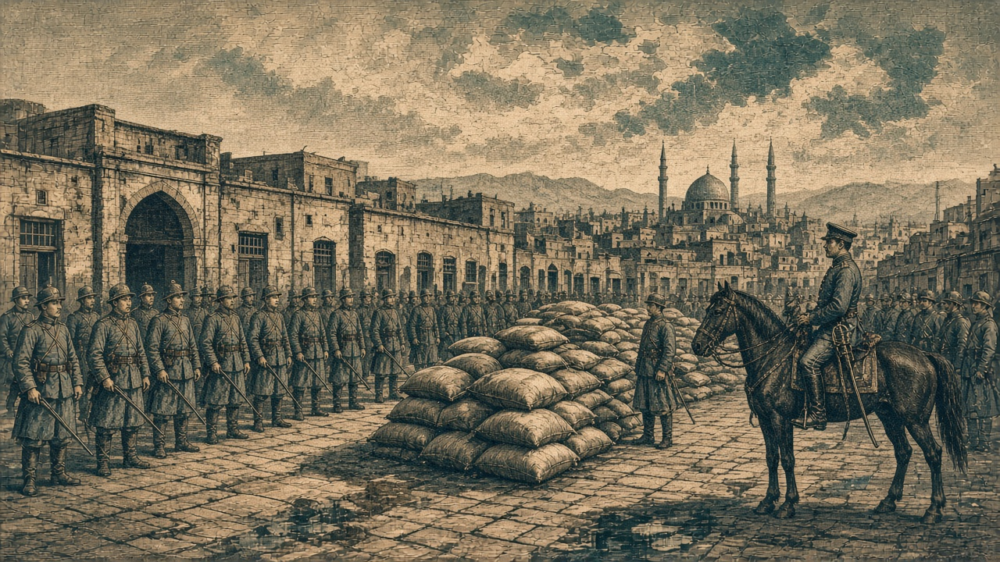
【総合部】第216期、泰平天国軍はテキスタン共和国の大都市二つ、都市二つ、町、港、農場、兵站基地、海底油田を相次いで占領した。接収した食糧は計十五万六千三百トン、予備兵二千人も投降した。公報損害は泰平二千人、テキスタン一万四千百人。首都テキシャ（36,14）はテキスタン領に残ったものの、港から内陸の都市群までを失い、共和国の輸送網は大きく分断された。
戦果は一つの戦線にとどまらない。オリョルッル王国はテキスタンに宣戦し、泰平との戦闘中の共和国は二正面を抱えた。黄砂同盟も翠湖自治州に宣戦、翠湖はカペレナ、オリョルッルに続く三つ目の相手を得た。スルガは青海共和国へ停戦を打診したが、今期の合意はない。火災は二十八件、人口減は十一万五千四百人に及んだ。
大陸では黒潮自治国が蒼森辺境伯領の平地（17,9）を占領し、領土を二区画から三区画へ広げた。第214期に上陸した海兵が荒地化したブローヴィーク跡で蒼森軍を退け、陸上の足場を確保した。テキスタンの都市群喪失と黒潮の一マス占領は規模こそ違うが、どちらも港と補給を押さえる戦いだ。詳報は2、3、5面、火災被害は7面、オリョルッル特集は9面に掲載する。
| 今期の主な数字 | |
|---|---|
| 泰平×テキスタン損害 | 泰平2,000／テキスタン1万4,100 |
| 徴発食糧 | 15万6,300トン |
| 黒潮の陸上占領 | （17,9）平地 |
| 黒潮×蒼森損害 | 黒潮3,200／蒼森1,600 |
| 火災 | 28件・11万5,400人 |
| 開戦 | オリョルッル王国×テキスタン／黄砂同盟×翠湖 |
- 2面黒潮、陸上を占領
- 3面蒼森の飢餓と暴動
- 4面なのです×白波続報
- 5面諸戦線・新開戦
- 6面宣戦控え
- 7面火災二十八件・人口減十一万五千人
- 8面弾薬と決まり
- 9面国特集 オリョルッル
- 10面夏の空
- 11面羊追いの夜
- 12面入門 上陸と陸上占領
- 13面短信
- 14面編集後記
2面特集 黒潮の陸上占領
大陸反攻
黒潮、平地（17,9）を占領 領土は三区画へ
第2方面軍の海兵がブローヴィーク跡を押さえる 蒼森歩兵一隊は玉砕
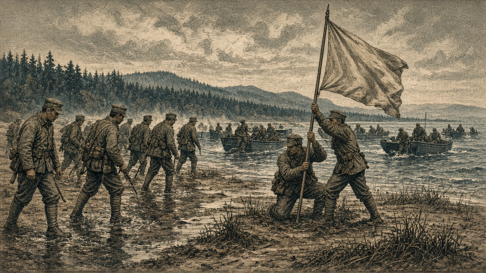
【政治部】黒潮自治国軍は蒼森辺境伯領の平地（17,9）を占領し、領土を前期の二区画から三区画へ広げた。第214期に上陸が報じられた地点で、今期の公報により所有が黒潮へ移った。首都は未設置のまま。海底へ移った政府が、再び陸上に足場を得た。
この一帯はブローヴィークと呼ばれ、第211期に荒地化した。第2方面軍の海兵が平地を守り、蒼森歩兵三隊が攻めた。Corps6は海兵に百人の損害を与えた後に全滅。Corps1は黒潮側へ六百人の損害を与えて八百人を失い、Corps3は二千五百人を与えて八百人を失った。公報上の当期損害は黒潮三千二百人、蒼森千六百人。蒼森の攻撃は平地を奪い返せず、守備隊は三隊とも後退または全滅した。
潮見玄吾議長は海底の指揮所から声明を出し、「潜った国が、また土を踏んだ。ブローヴィークの跡地は黒潮の橋頭堡である」と述べた。評議会は平地への住民移送と、倉庫・港を次に確保する計画を議題にしている。旗を立てた地点を維持するには、海上輸送の部隊へ食糧と弾薬を届け続けなければならない。
黒潮の人口は三万三千四百人、兵力は六万七百人。蒼森との戦闘は続き、金野戦では黒潮が停戦を打診している。首都も補給拠点もない小さな足場を、上陸部隊の犠牲を抑えて広げられるか。議長の言う「大陸反攻」は、まずこの海岸を保ち、次の港まで補給路を延ばせるかにかかる。
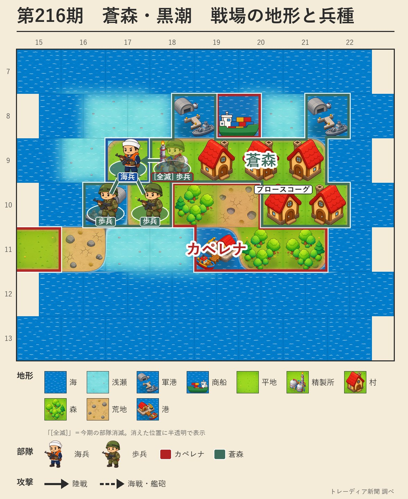
| 黒潮自治国（第216期） | |
|---|---|
| 人口 | 3万3,400人 |
| 兵力 | 6万700人 |
| 領土 | 3区画（＋1） |
| 食料 | 22万2,300トン |
| 首都 | 未設置 |
| 交戦国 | 蒼森・金野 |
蒼森Corps6歩兵が（17,9）の海兵を攻撃し、百人を死傷させたが部隊は全滅した。Corps1は六百人を与え八百人を失い、Corps3は二千五百人を与え八百人を失った。黒潮は平地を守り切った。

フィルノア跡 潮見計器
陸を踏んだ週も、方位を確かめる。
方位盤・気圧計。
黒潮・外洋航路
3面国際 蒼森
続報
蒼森で餓死者相次ぐ 暴動続く一方、市街に力尽きた人々
人口は一期間で6,500人減 配給停止後、路上に倒れる住民
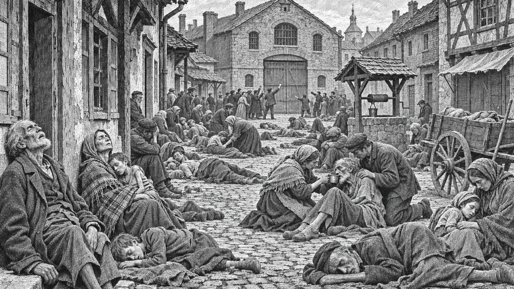
【社会部】蒼森辺境伯領で餓死者が相次いでいる。食糧庫が空になり配給が止まって以降、住民は数日分の食べ物も得られず、家の前や市街の道端に倒れたまま動けない人が増えた。今期の人口は一万千三百人から四千八百人へ、一期間で六千五百人減少。領内にはなお六万五千人の兵力が登録されているが、住民の救援に回る食糧はない。
村六か所では暴動が続き、一部の住民はカペレナ王国の兵站基地（19,10）へ押し寄せて門と倉庫を破壊した。食糧を探して袋を開ける人々の前に、配給に回せる備蓄は残っていなかった。怒りを表す力が残る者は倉庫へ向かう一方、多くの人は抗議の列に加わることもできず、家族や近隣住民に支えられて路傍に横たわる。港（19,11）はカペレナ領となり、外からの食糧を受け入れる手段も失われた。
黒潮との陸戦では蒼森歩兵三隊が平地（17,9）を奪い返せず、沿岸の足場を失った。首都ブロースコーグの倉も空で、カペレナ軍は（19,10）（21,11）などで整地と部隊配置を進めている。第218期にはカペレナとの開戦が控える。蒼森側は停戦を打診しているが、交渉の返答を待つ時間も、住民には食糧のない日として積み重なる。
| 蒼森辺境伯領 | |
|---|---|
| 人口 | 4,800人 |
| 兵力 | 6万5,000人 |
| 食料 | 0トン |
| 領土 | 12区画 |
| 暴動 | 6か所 |
| 交戦国 | 黒潮のみ |
貴族家の指揮系統は前期から混乱し、守備隊は命令と補給を同時に失った。隣国の兵站を襲った住民と、黒潮の海兵を押し返せなかった辺境伯軍。軍を立て直すだけでは領民を救えない。港を失い備蓄もない蒼森に、配給をどう再開するのか。住民の関心は、次の食事を確保できるかに向いている。

ブロースコーグ 森の粉屋
空の倉のあとに、一袋を。
麦粉・乾し茸。
蒼森・ブロースコーグ
4面国際 なのです×白波
続報
なのです、白波へ攻勢 白波駆逐艦二隻が沈む
当期損害はなのです8,500／白波1,400 白波は徴兵四万人
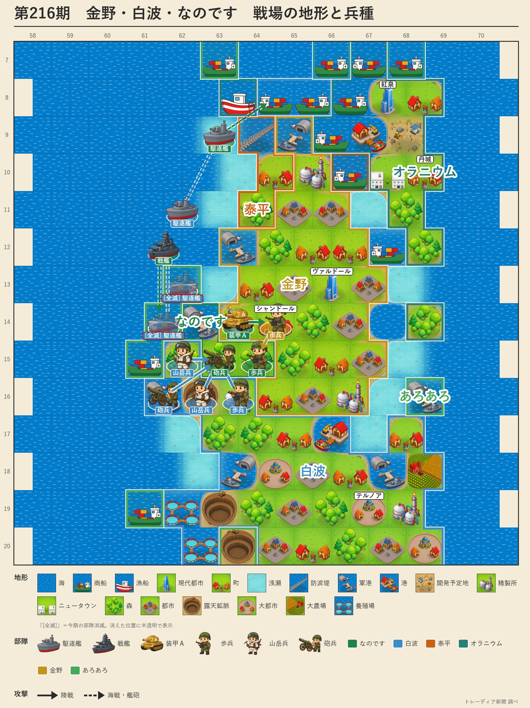
【軍事部】なのです主義人民共和国と白波王国の戦争は二期目に入った。当期の公報損害はなのです八千五百人、白波千四百人。白波艦隊は駆逐艦二隻を失った。陸上部隊の衝突も続き、白波は人数指定徴兵で四万人を予備兵へ加え、部隊の再編を急いでいる。
白波の人口は二十一万八千六百人。前期から三万三千百人増えたのは、チェス＝シロバキア共和国から七万五百人が移住したためだ。兵力は二十九万三千三百人に達するが、交戦相手はチェス、泰平、なのですの三国。徴兵で兵員を補う一方、港湾や輸送路を守る部隊も必要になり、増えた人口をそのまま前線へ回すことはできない。
金野伯爵領との戦闘では金野が三千五百人、なのです側が二百人の損害を出した。金野はなのですへ停戦を打診しているが、戦場では砲火が続く。外交文書が届き、条件が整うまで、前線の部隊には今日の命令が優先される。
| 白波王国 | |
|---|---|
| 人口 | 21万8,600人 |
| 兵力 | 29万3,300人 |
| 領土 | 37区画 |
| 交戦国 | チェス・泰平・なのです |
| 今期撃沈 | 駆逐艦2 |
白波艦艇の喪失も加わった。白波には兵員の補充だけでなく、三正面へ弾薬と食糧を運ぶ負担が残る。人口増と徴兵で兵数をそろえても、沈んだ駆逐艦の穴はすぐには埋まらない。

白波港 白波フライ
船台のあとに、一包み。
白身魚の小片揚げ。
白波・白波港
5面国際 諸戦線
開戦
オリョルッル×テキスタン、黄砂×翠湖が開戦
【国際部】第216期、オリョルッル王国はテキスタン共和国へ、黄砂同盟は翠湖自治州へ宣戦した。テキスタンは泰平に続く二正面、翠湖はカペレナ、オリョルッルに続く三正面となった。今期の損害は新たな両戦線では計上されていない。開戦直後の各軍は、すでに交戦中の国との戦線もにらみながら部隊を配置することになる。
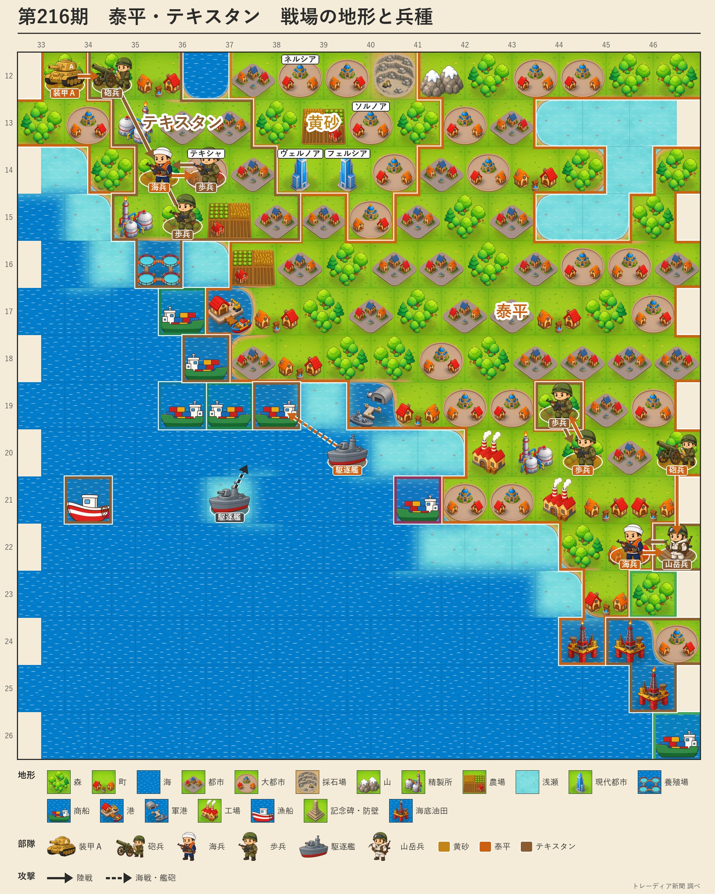
泰平の占領は港（37,17）、町（45,23）、大都市（42,21）（43,21）、都市（37,18）（39,15）、兵站（44,20）、農場（37,16）、海底油田（44,24）に及ぶ。首都テキシャ（36,14）は残る。都市群と港を失ったことで、首都周辺へ兵と物資を運ぶ経路の再構築が急務となる。食糧は計十五万六千三百トンが接収され、予備兵二千人も投降した。
続報
スルガ7,900 藍岬8,300 翠湖9,000 各戦線の損害
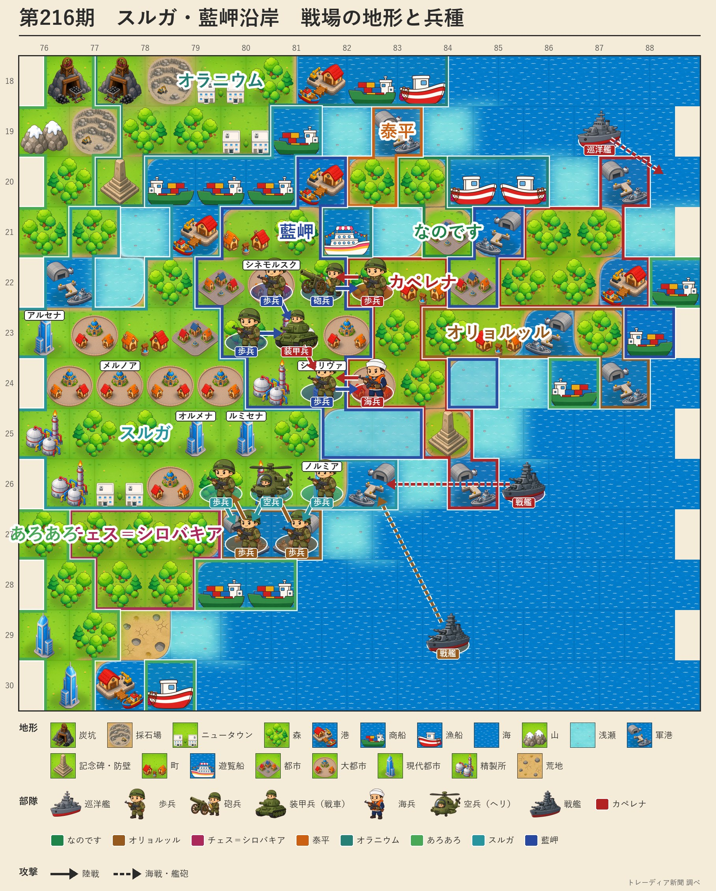
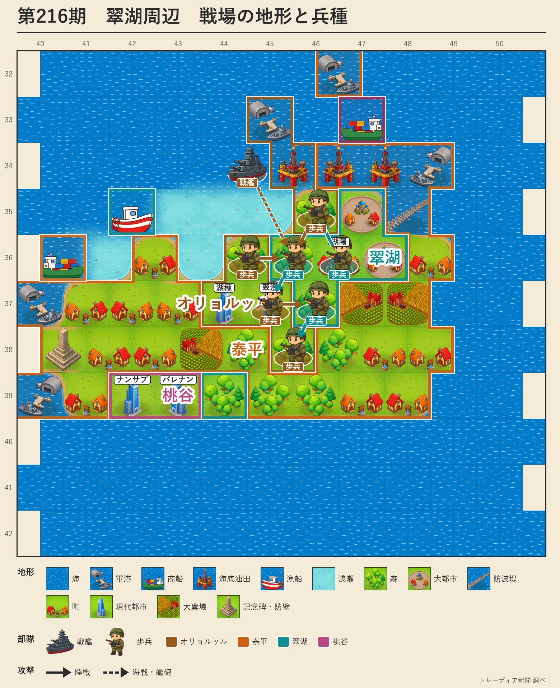
スルガ対オリョルッルの損害はスルガ七千九百人、王国三千二百人。なのです軍とオリョルッル軍の艦砲がスルガ軍港（82,26）へ命中し、累計二発となった。藍岬対カペレナは藍岬八千三百人、カペレナ千三百人。翠湖対オリョルッルは翠湖九千人、王国六百人で、兵站基地（45,38）が占領され予備兵千人が投降した。スルガは青海へ停戦を打診した。

湖陽 杭の湯
三正面の週も、一杯。
翡翠団子・温湯。
翠湖・湖陽
6面国際 宣戦控え
予定表
宣戦控えは217〜219 今期の停戦合意なし
【国際部】次の三期に開戦予定が集中する。第217期はオリョルッル王国対胡椒王国、黄砂同盟対スルガ国、第218期はカペレナ王国対蒼森辺境伯領、第219期は泰平天国対金野伯爵領。今期に成立した停戦合意はなく、スルガから青海、金野からチェスと、なのですへの打診などが交渉待ちで残る。
| 期 | 控え | 状態 |
|---|---|---|
| 216 | オリョルッル王国×テキスタン／黄砂同盟×翠湖 | 開戦済み |
| 217 | オリョルッル×胡椒／黄砂×スルガ | 未到来 |
| 218 | カペレナ×蒼森 | 未到来 |
| 219 | 泰平×金野 | 未到来 |
停戦の申し入れは相手が受け入れて初めて戦闘を止める取り決めになる。白波が泰平へ再度打診できるのは待機期間を過ぎる第217期以降。予定された開戦が続く国々は、交渉と次の戦線への備えを同時に進める。
人口移動も続いた。青海からあろあろ国へ十一万五千四百人、チェス＝シロバキアから白波へ七万五百人、狐っ娘の尻尾教団から黄砂へ三千八百人が移った。受け入れ側では住居、食糧、雇用の手当ても要る。
怪獣も各地に出現した。いのらはカペレナの町（11,14）を踏み荒らし、キングいのらはチェスの森（81,65）へ、レッドいのらは中立の荒地（18,24）へ現れた。軍の移動に加え、怪獣への警戒に割く部隊も必要になる。

諸国算盤店
控えの期を、珠で確かめる。
算盤・台帳。
各地の算盤店
7面社会 火災
災害
火災二十八件 人口減は十一万五千四百人
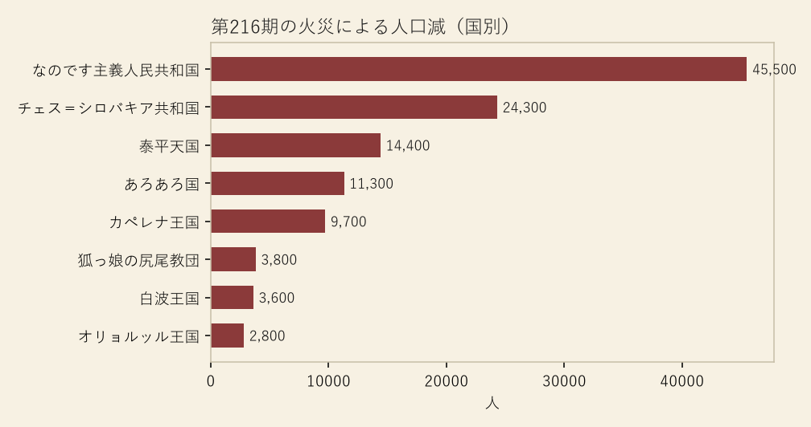
【社会部】第216期に記録された火災は二十八件、火災前後の集計上、人口減は計十一万五千四百人に上った。国別では、なのです主義人民共和国が十三件・四万五千五百人で最多。チェス＝シロバキア共和国は六件・二万四千三百人、泰平天国は三件・一万四千四百人、あろあろ国は二件・一万千三百人だった。
カペレナ王国では一件で九千七百人、狐っ娘の尻尾教団では一件で三千八百人、白波王国では一件で三千六百人、オリョルッル王国では一件で二千八百人の人口減が記録された。少数の火災でも人口密集地で起きれば被害は大きい。集計は火災前後の人口差で、犠牲者の身元や発生場所の内訳は公表されていない。
なのですでは町と現代都市が焼け、チェスでも市街地の火災が続いた。火が収まっても住まい、工房、食糧庫の再建には木材と人手が要る。住民を近隣へ移すのか元の区画に戻すのかで、次期の人口と税収も変わる。戦場を抱える国では復旧に回せる輸送力と兵員の確保が課題だ。
電都 粉挽き組合
焼け跡のあとに、新しい粉を。
麦粉・雑穀。
なのです・電都
8面経済・国土
相場
弾薬は8.60のまま 貿易額首位はなのです
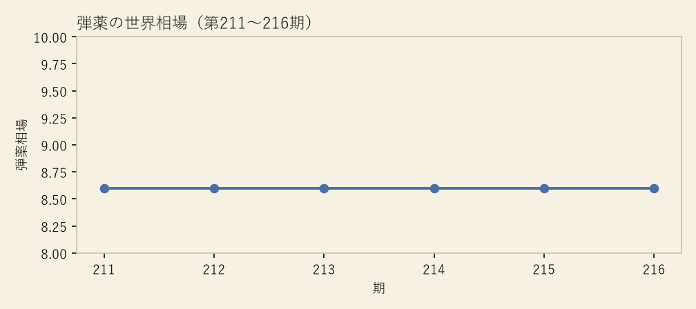
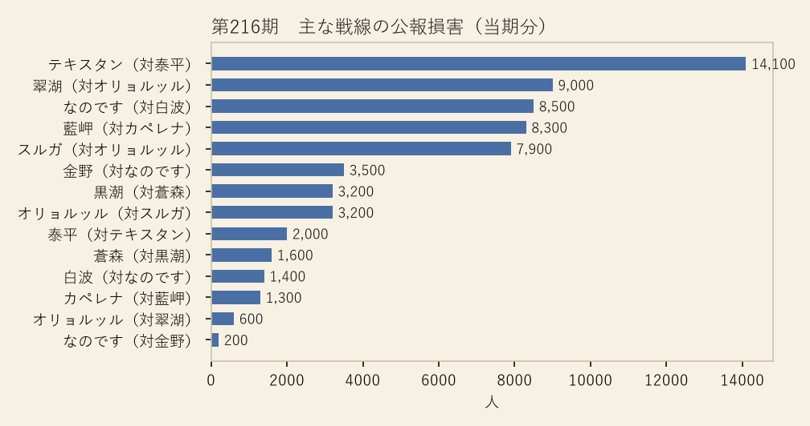
貿易額の上位は、なのです七万三千五百三十四、あろあろ六万八千四百八十二、狐っ娘の尻尾教団六万二千二百五十四。航海数は青海が千九で首位、なのです八百二十七、カペレナ五百六十四が続いた。競売には石材・木材・石油などが並ぶ。弾薬相場は8.60で前期と同水準。売買順位と航路の利用から物流の一端が見える。
決まり
都市圏の数え方と落盤の確率が見直し
【経済部】第216期に適用された改定では、都市圏、鉱山・油田、造船画面の仕様が変わった。都市圏が中心から二マス先まで広がる条件では、中心に隣接する成熟居住地を自国・他国を問わず数える。隣国側の居住地も条件に入るため、国境沿いの都市の広がり方が変わる。
鉱山と油田の落盤確率は段階ごとに引き下げられた。段階一は五・五％から二％、段階十は一％から〇・四％に下がった。資源を産業と軍需の両方に回す国には、設備を維持できる期間も計算材料になる。軍の編成画面には各軍港の隣接水域のうち造船に使える区画が表示され、造船できない場合も理由が示される。
セルヴァナ 潮見計器
夏の風を、数字に。
気圧計・方位盤。
青海・セルヴァナ
9面国特集 オリョルッル王国
国特集
オリョルッル王国 高原の牧と、広がる前線
人口252万1,300 兵力91万2,800 領土405 表明「せかいへいわ」
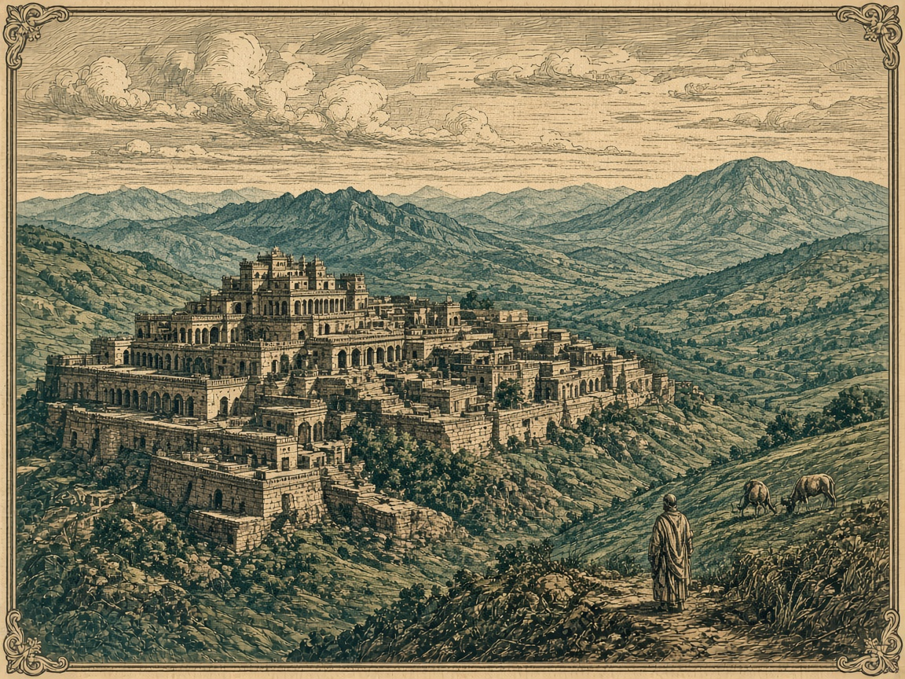
【特集部】オリョルッル王国は人口二百五十二万千三百人、兵力九十一万二千八百人、領土四百五区画。食糧は三百万トンで上限の三百万トンを保ち、国庫は一万六千七十一億円。表明は「せかいへいわ」と表明する。交戦相手はスルガ、翠湖、テキスタンの三国となった。
高原の広い領土は、前線へ兵を集めるにも物資を運ぶにも時間がかかる。今期、翠湖の兵站基地（45,38）を占領したが、守備隊千人が投降しても各部隊へ食糧や弾薬を届ける道がなければ、戦力には結びつかない。スルガ沿岸では軍港へ艦砲が命中し、テキスタンとは新たに開戦した。王国軍は別々の方角へ兵を割く。
王都周辺の段丘には羊飼いの小屋と石工の工房が並ぶ。朝は牧人が尾根へ羊を追い、石工は水路や牧柵の土台に使う石を切り出す。午後には市で羊毛、塩、乾物が交換され、茶屋には果実茶と一夜干しが並ぶ。国土を支えるのは、村々の生産と町を結ぶ街道だ。
食糧が上限まで積み上がる一方、三つの戦線では兵員の損耗が続く。備蓄を前線へ送れば各地の暮らしや次の徴兵にも影響する。平和を掲げた王国が戦場で何を得て、どの地点を守るのか。長い補給路を抱えた四百五区画を維持できるかが問われる。次号はあろあろ国の人の移動と商いを取り上げる。
| オリョルッル王国 | |
|---|---|
| 人口 | 252万1,300人 |
| 兵力 | 91万2,800人 |
| 領土 | 405区画 |
| 食料 | 300万トン |
| 国庫 | 1万6,071億円 |
| 交戦国 | スルガ・翠湖・テキスタン |
段丘の宮殿通り、尾根の牧道、羊追いの木杯、果実茶と一夜干し。
王都 尾根茶屋
牧のあとに、一杯。
果実茶・一夜干し。
オリョルッル・王都
10面気象
実況
夏空は曇天優勢 雨は前期より減少
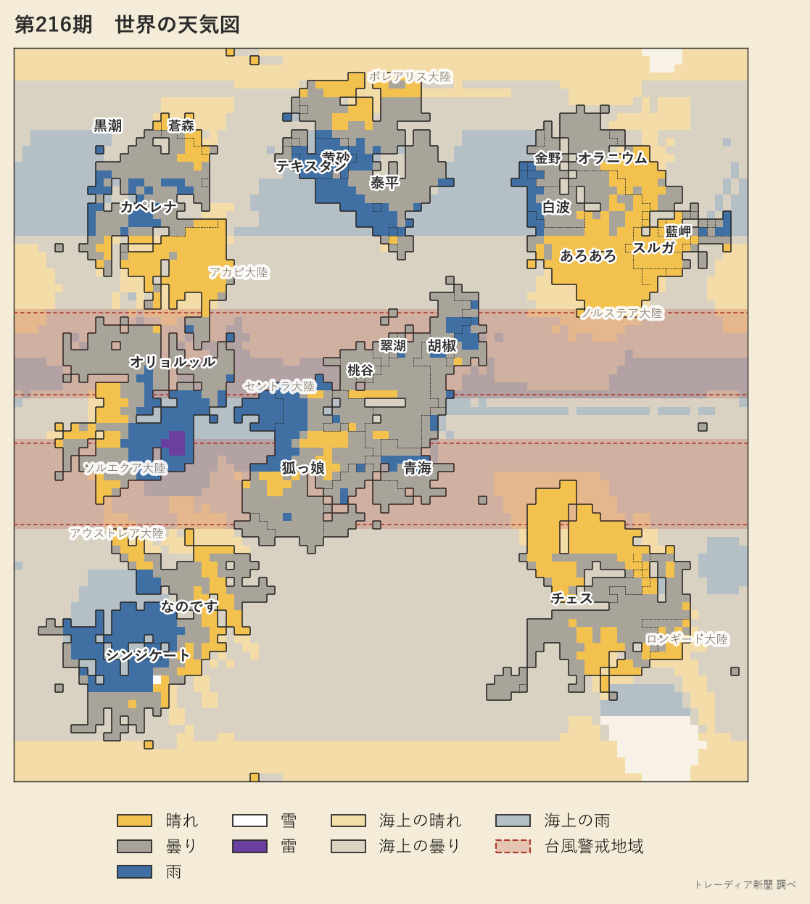
第216期は晴れ一九三三、曇り四八〇七、雨一二六三、雪九十、雷七。集計対象八千百区画の約六割が曇りで、晴れの三倍近い。前期より曇りは三百六十六増え、雨は三百七、雪は八十六減少。雷は七で変わらなかった。雨域は縮んだが、雲の多い空が続く。農地では日照と水分を見ながら収穫時期を決め、港では天気図と海流図を合わせて航路を選びたい。台風警戒帯にかかる沿岸では、出港前に図を確かめたい。
見通し
第217期 天気予報と海流
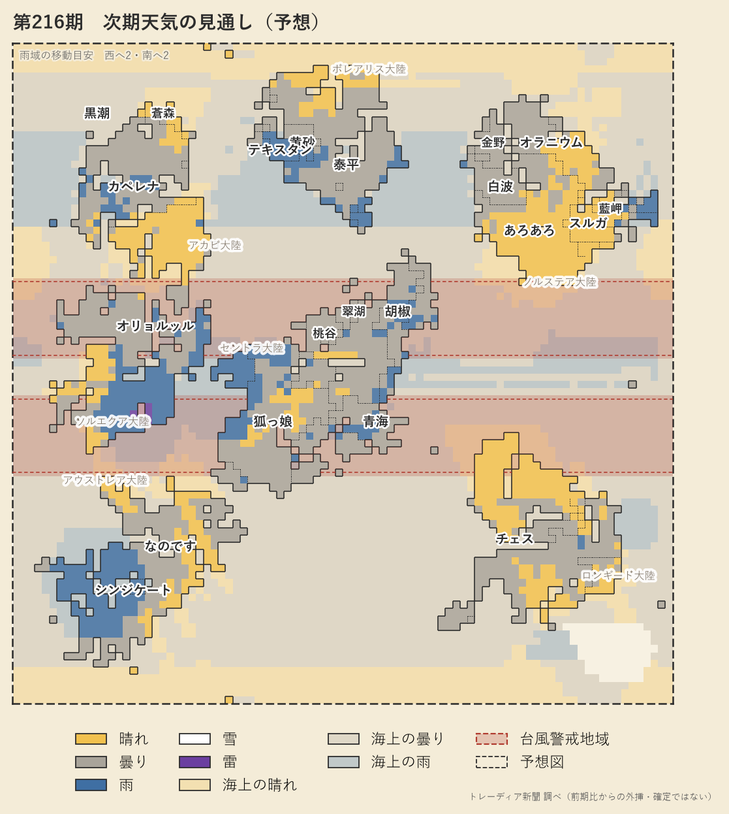
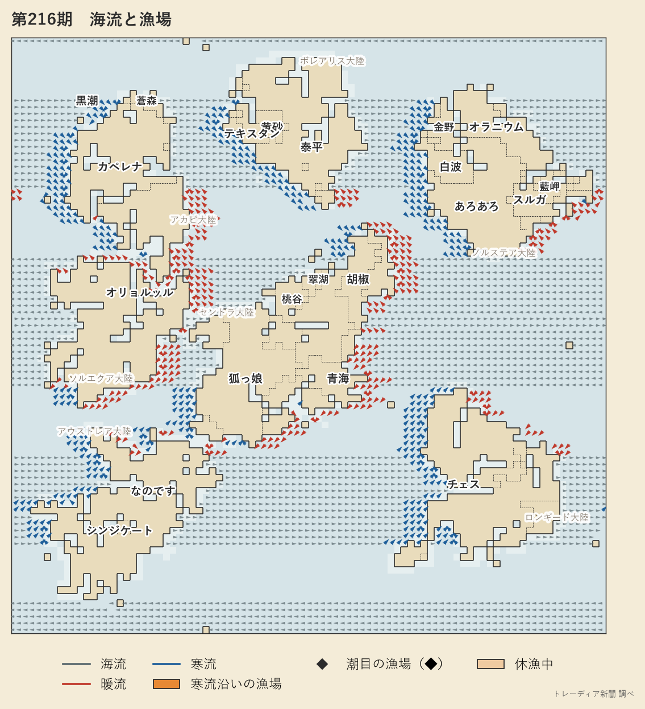
天都 和紙店
号外の紙を、整え直す。
和紙・朱墨。
泰平・天都
11面文化
行事
羊追いの夜 高原に油灯が並ぶ
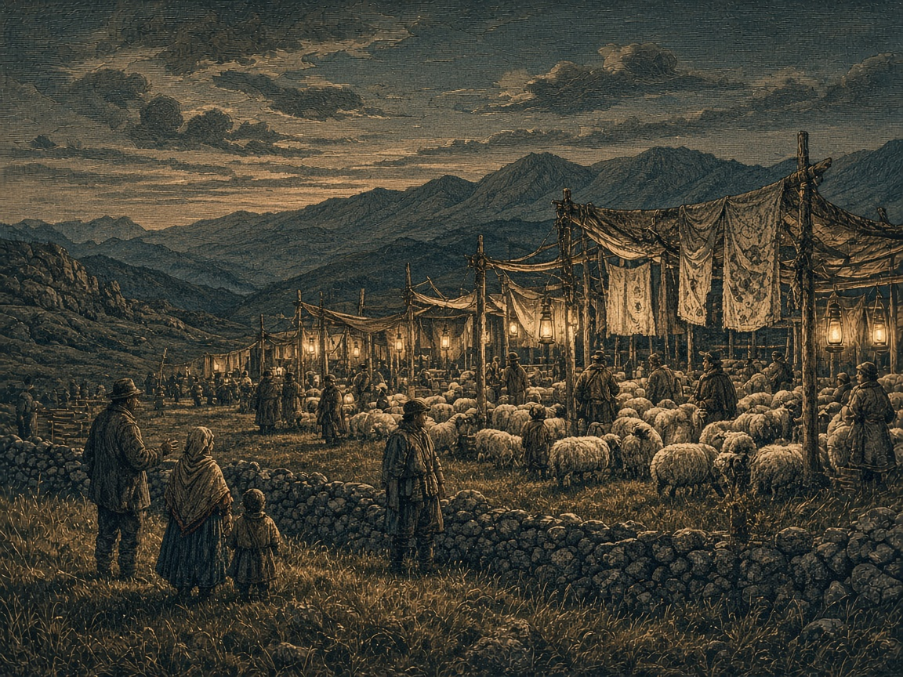
【文化部】オリョルッル王国南部の牧地で、夏の羊追いを前にした前夜祭が開かれた。昼のうちに牧人たちが柵を直し、夕暮れには羊毛を染めた旗を持って尾根道を歩く。油灯が段丘に沿って灯るころ、麓の市では毛糸、革紐、木杯が広げられた。遠くの牧から羊を集める合図を兼ねた季節の行事だ。
茶屋の長卓には果実酒、一夜干し、焼きパンが並ぶ。牧人は冬毛を刈る日取りを相談し、石工は牧柵の石積みを請け負う。市の勘定役によると、今年は羊毛を布に織る工房が二軒増え、祭りの旗も地元の染め手が仕立てた。牧畜の品を売り、道具や塩を買い戻す市は、離れた牧場と町を結ぶ。
子どもたちは羊角を模した木の玩具を走らせ、年寄りは火のそばで去年の吹雪と迷い羊の話をした。老いた牧犬は人の輪の外を歩き、見慣れない客が来ると低く吠えた。尾根茶屋の主人は「明日の羊追いに備えて、今夜は柵と灯を確かめる」と話す。兵の往来が増えた街道沿いでは、市が開かれることを喜ぶ家もあった。
翌朝、若い牧人が羊の群れを北の放牧地へ導く。旗は畳まれ、油灯は消えるが、売買の帳面には冬支度の注文が残る。牧地では家畜を育て、毛を加工し、次の季節へ備える仕事が続く。
| 羊追い前夜祭 | |
|---|---|
| 場所 | オリョルッル南部牧 |
| 出し物 | 毛糸市・油灯行列 |
| 食べ物 | 一夜干し・焼きパン |
王都 毛糸店
前夜祭の旗を、整え直す。
羊毛・紐。
オリョルッル・王都
12面入門講座
入門第64回
上陸と陸上占領 海の国が土を踏むとき
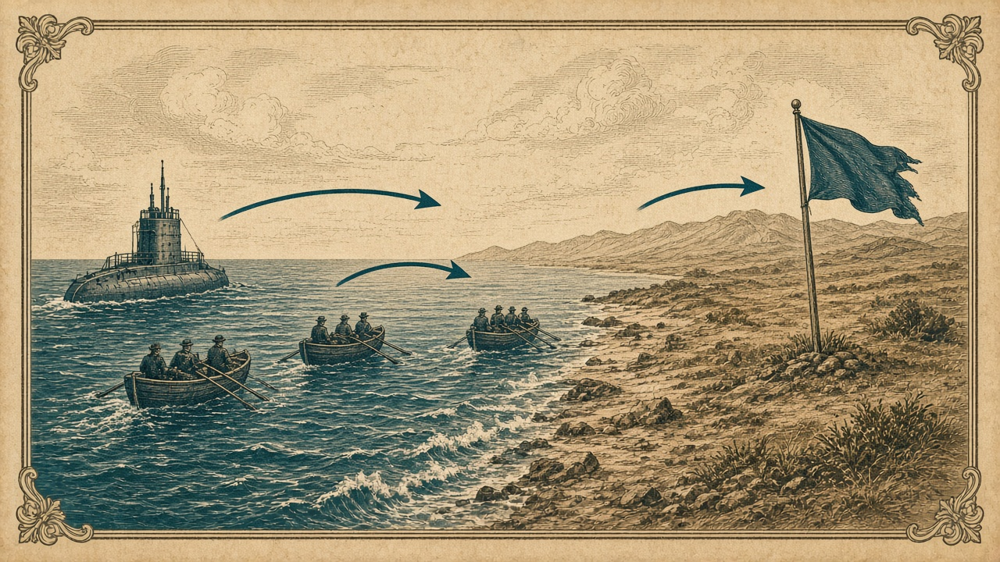
【編集部】上陸は部隊が海岸のマスへ到達すること、占領は土地の所有国が変わり領土数にも反映されることを指す。岸へ兵を送っただけではまだ元の国の土地であり、守備隊がいれば上陸地点を巡る戦闘が続く。
黒潮自治国は第214期に上陸した（17,9）を第216期に占領し、領土を二区画から三区画へ増やした。蒼森歩兵三隊が反撃し、黒潮側にも三千二百人の損害が出たが平地は黒潮領となった。「上陸」と発表された後、所有国が変わったか、領土数が増えたかを見れば足場の維持を確かめられる。港や兵站基地を押さえれば物資を運びやすく、農場や都市を得れば食糧と人口の基盤が増す。平地だけを確保した黒潮は、海から部隊へ物資を送り続ける必要がある。
- 上陸＝部隊が岸へ到達
- 占領＝マスの所有が移る
- 領土の増減は所有の結果
- 首都が無い国もある
諸国算盤店
上陸のあとに、珠を置く。
算盤・台帳。
各地の算盤店
13面短信
泰平×テキスタン 大都市二つ、都市二つなど九地点を占領。損害泰平2,000／テキスタン1万4,100。食糧15万6,300トン徴発。
黒潮×蒼森 黒潮が平地（17,9）を占領し、領土は3区画へ。損害は黒潮3,200人、蒼森1,600人。
開戦 オリョルッル王国がテキスタン共和国へ、黄砂同盟が翠湖自治州へ宣戦。
なのです×白波 損害はなのです8,500人、白波1,400人。白波駆逐艦2隻が沈没。
翠湖×オリョルッル 兵站（45,38）を失陥。損害は翠湖9,000人、オリョルッル600人。予備兵1,000人が投降。
スルガ×オリョルッル 損害はスルガ7,900人、オリョルッル3,200人。青海へ停戦を打診。軍港（82,26）へ艦砲が命中し累計2発。
藍岬×カペレナ 損害は藍岬8,300人、カペレナ1,300人。
蒼森 食糧ゼロで暴動6か所。住民が兵站（19,10）を破壊。港（19,11）はカペレナ領となり、人口は4,800人。
移民 青海→あろあろ11万5,400、チェス→白波7万500、教団→黄砂3,800。
橙原 部隊全滅。なのです艦砲が海底都市へ命中。
セルヴァナ 桟橋茶舗
号外のあとに、一服。
麦茶・塩豆。
青海・セルヴァナ
14面編集後記
第216期は、泰平天国がテキスタン共和国の都市群を一気に押さえ、黒潮自治国が蒼森辺境伯領の平地に旗を立てた週だった。泰平は食糧十五万六千三百トンを得た一方、黒潮が確保したのは小さな足場一つ。両軍の戦果は規模こそ異なるが、いずれも港と補給路をめぐる動きだった。
黒潮の平地占領と同じ沿岸では蒼森の食糧が尽き、住民がカペレナの兵站基地へ押し寄せた。港はカペレナ領となり、蒼森の人口は一万千三百人から四千八百人へ減った。地図の色が変わる間にも村の配給所や街道は使えなくなっていく。前線の勝敗だけでは説明できない暮らしの崩れが3面に表れている。
二つの新たな開戦、白波の駆逐艦二隻の沈没、二十八件の火災と十一万五千四百人の人口減も記録された。来期から三期にかけて開戦予定が並ぶ。次号では宣戦予定と各国の補給を追い、黒潮が足場を広げられるか、蒼森が配給を再開できるかを確かめたい。
王都 尾根茶屋
牧のあとに、一杯。
果実茶・一夜干し。
オリョルッル・王都